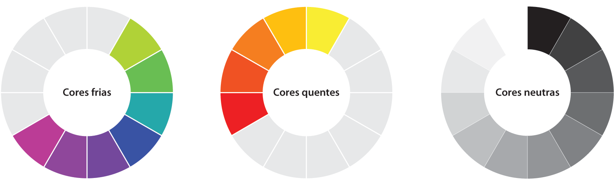

O que são cores?
As cores, como vistas pelos seres humanos, podem ser explicadas como a "incidência e reflexão da luz sobre um objeto" (segundo Laura Aidar, artista visual).
Elas não possuem existência material, sendo, então, uma sensação provocada pela ação da luz sobre os olhos.
Cores quentes e frias
Algumas cores levam o título de 'frias' e outras de 'quentes', dependendo da sensação que transmitem.
Em teoria das cores, entende-se ser possível o uso de tonalidades específicas para que mensagens sejam expressas de forma implícita.
No marketing e no ramo de maquiagens, por exemplo, essa teoria já se faz valer. E em outros campos, como no design de interiores, está aos poucos se estabelecendo.
